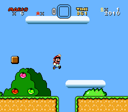
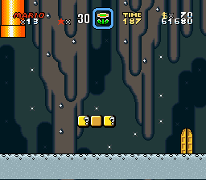
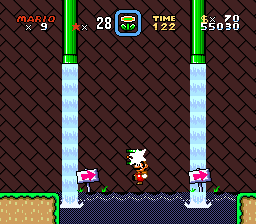
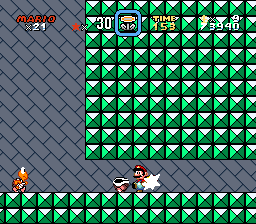

Supersonic Mario Bros. 4
*Supersonic Mario World*
Busting its way to your Super Famicom on November 21 ,1997!




Tackle a whole new world with Mario and the gang!
Mario’s off on his strangest adventure yet. He’s not fighting on home turf this time. King Koopa and Sonic the Hedgehog have teamed up to defeat Mario once and for all. Get Mario and his friends through six Sonic the Hedgehog inspired worlds to beat Bowser once again.
Use Mario’s arsenal of powerups as you boost your way through 24 levels filled with hungry Pihrana Plants, munching Munchers, and many more dangerous foes. Walk on walls, traverse the deep caves, and infiltrate the castles to pave your path to victory. At the end, there are six more bonus levels if you can find the key and keyhole at the Final Zone!
Mario’s back, and ready for action!
Get YOUR free copy of the Supersonic Mario Bros. 4 – World 1 prototype here.
© TheWindowsPro98 2017 – 2022 for the hack
© Nintendo 1985 – 2022 for Mario, the Super Famicom, the original game, and the Super Mario World boxart (what this site is loosely based off of)
© SEGA 1991 – 2022 for Sonic the Hedgehog